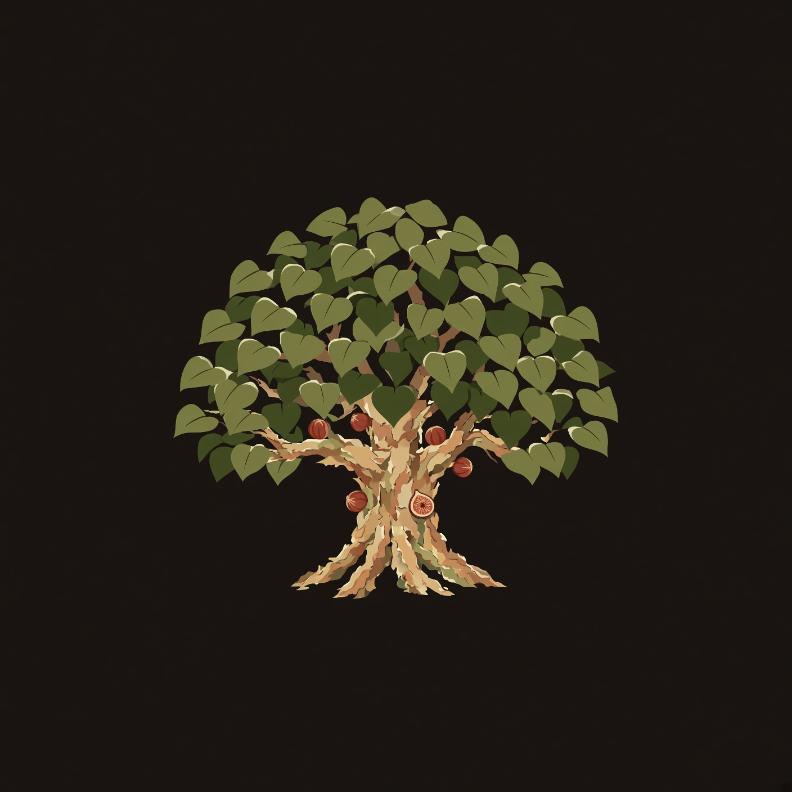

Sycamore HQ · CrossR
Low crown
The mark is a squat Ficus sycomorus — short bole, heavy limbs, dense round crown. Not Platanus. Figs on old wood. Do not hide the belief. Do not flaunt it. No cross in the mark. No verse on the door. No hammer, no flame.

- Spoken house: Sycamore. Legal/GitHub: sycamore-hq.
- Products keep their names: CrossR Skills, Berea. Berea is not on this door.
- Motto: Height enough.
- Door chrome uses the SVG. Banners and OG use the painted stills in this folder.